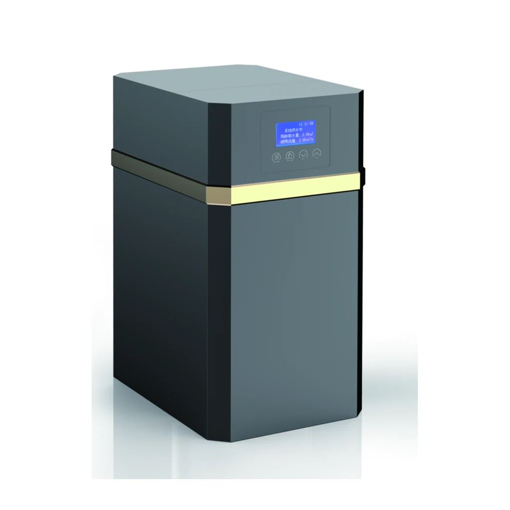
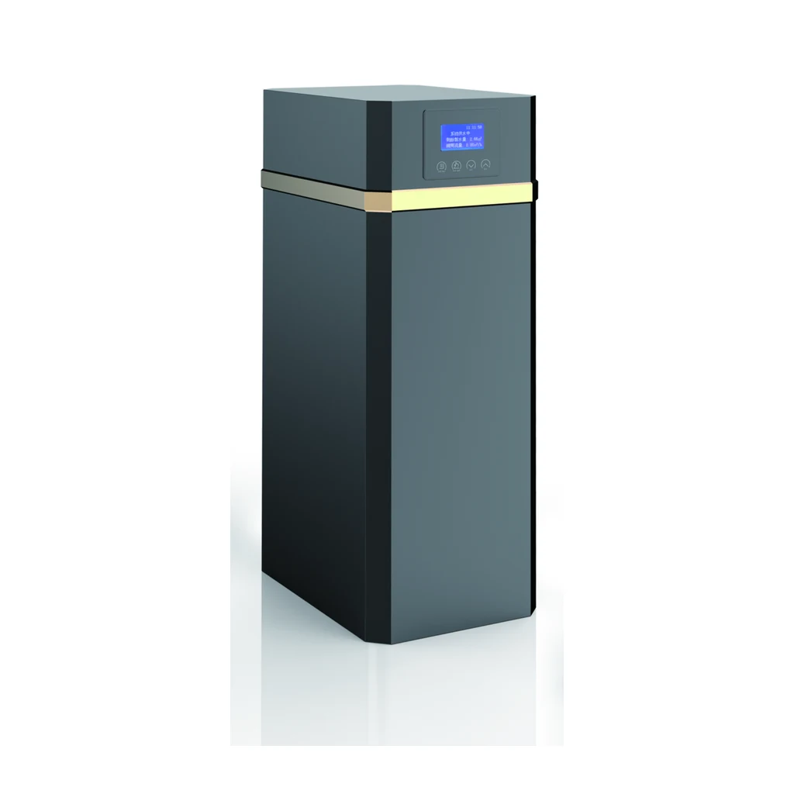
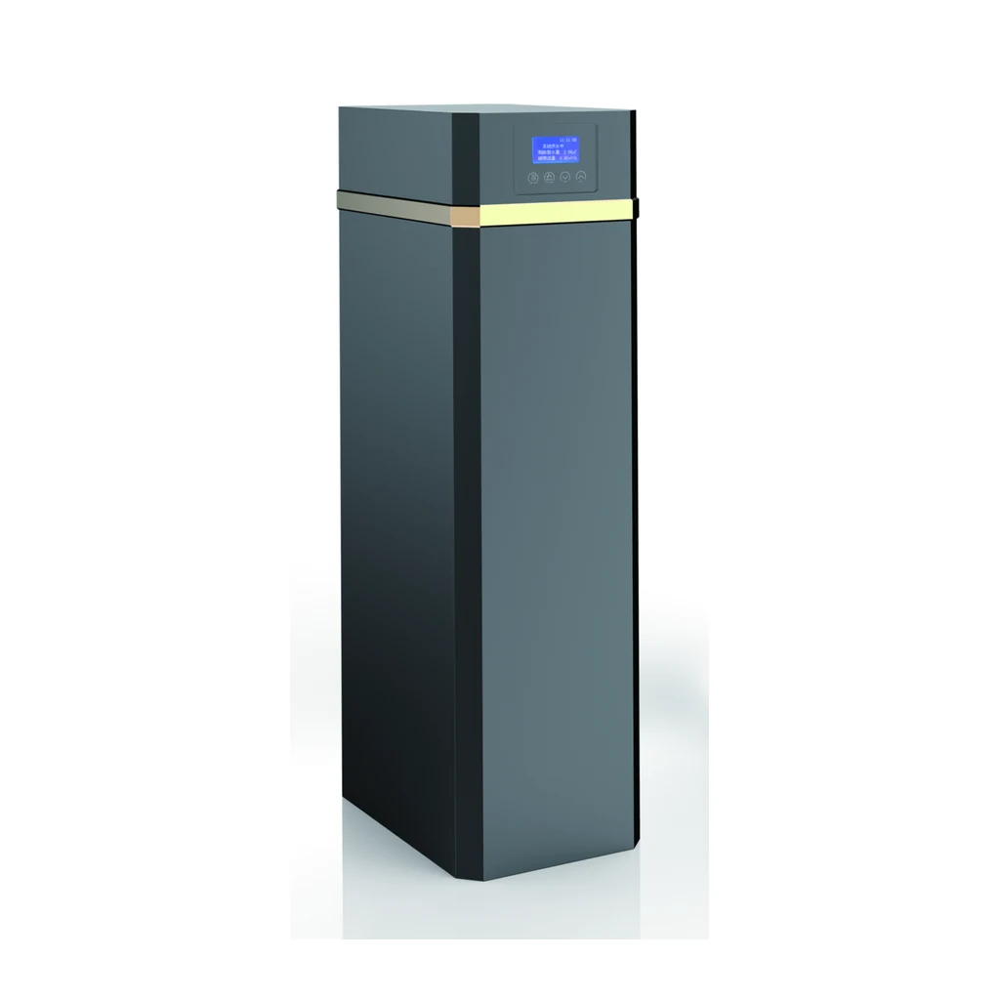

Automatic Water Softener
YC-R1000D
YC-R1000D has the source-listed Product Size(with By-pass) value 270X420X510mm.
Request a Quote for YC-R1000DThe YC-RD family uses the confirmed B-series parameter values with D model suffixes and its own source-shown cabinet images.
Source review note: Model suffixes reflect the confirmed correction supplied with the reviewed source; numeric and unit values remain unchanged.
Each image is a deterministic crop from the approved product-only PDF panel; no product geometry, color, controller or accessory was redrawn.

YC-R1000D has the source-listed Product Size(with By-pass) value 270X420X510mm.
Request a Quote for YC-R1000D
YC-R2000D has the source-listed Product Size(with By-pass) value 270X420X710mm.
Request a Quote for YC-R2000D
YC-R3000D has the source-listed Product Size(with By-pass) value 270X420X1020mm.
Request a Quote for YC-R3000DThe YC-RD Automatic Water Softener Series comparison uses the owner-approved public YC identifiers. Every technical value and unit below preserves the reviewed source notation.
| Specification | YC-R1000D | YC-R2000D | YC-R3000D |
|---|---|---|---|
| Valve Type | Automatic Softener valve | Automatic Softener valve | Automatic Softener valve |
| Regeneration Mode | Meter Timer Mix/Timer | Meter Timer Mix/Timer | Meter Timer Mix/Timer |
| Working Pressure | 0.15-0.5MPa | 0.15-0.5MPa | 0.15-0.5MPa |
| Power Supply | 220V/110 50Hz | 220V/110 50Hz | 220V/110 50Hz |
| Inlet & Outlet size | 3/4" | 3/4" | 3/4" |
| Drain Size | 12mm | 12mm | 12mm |
| Working Temperature | 5~48℃ | 5~48℃ | 5~48℃ |
| Brine Valve | Yes | Yes | Yes |
| Resin Volume | 12L | 18L | 25L |
| FRP Tank Size | 1015 | 1024 | 1035 |
| Flow Rate | ≤1.0T/H | ≤2.0T/H | ≤3.0T/H |
| Product Size(with By-pass) | 270X420X510mm | 270X420X710mm | 270X420X1020mm |
The reviewed YC-RD Automatic Water Softener Series table identifies an automatic softener valve, Meter Timer Mix/Timer regeneration mode, resin volume and a brine valve. In a typical softening configuration, the valve controls service and regeneration around the resin bed; resin chemistry and rated capacity require separate confirmation.
YC-R2000D lists ≤2.0T/H, 18L Resin Volume, FRP Tank Size 1024 and Product Size(with By-pass) 270X420X710mm.
YC-R1000D lists ≤1.0T/H and 12L Resin Volume; YC-R3000D lists ≤3.0T/H and 25L Resin Volume.
No. Each YC-RD flow value is preserved as a source-listed selection row and must be confirmed against feed-water conditions and system design.
Provide the exact YC-RD model, feed-water analysis, electrical requirement, connection details, intended configuration and project quantity.